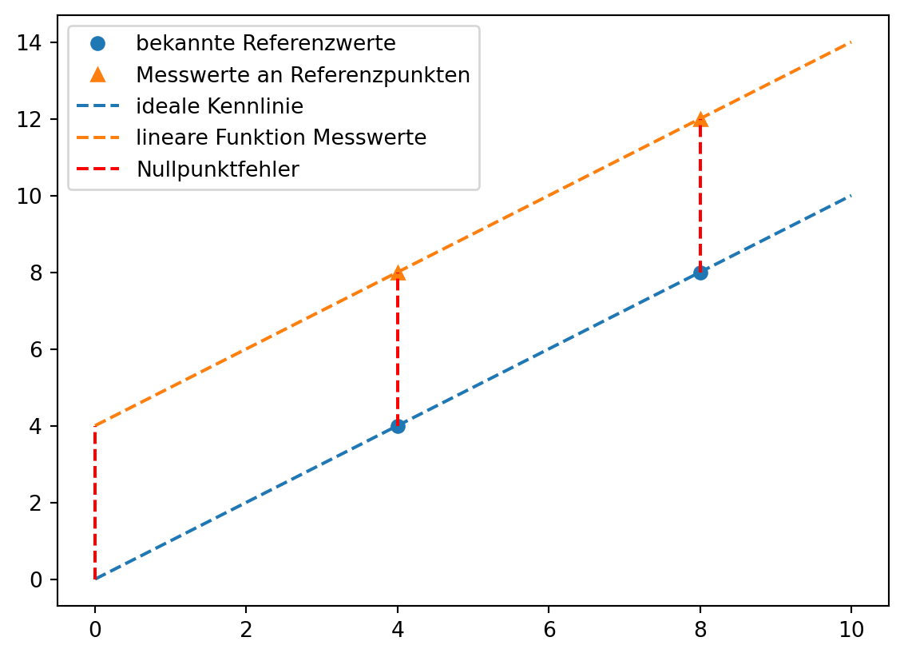
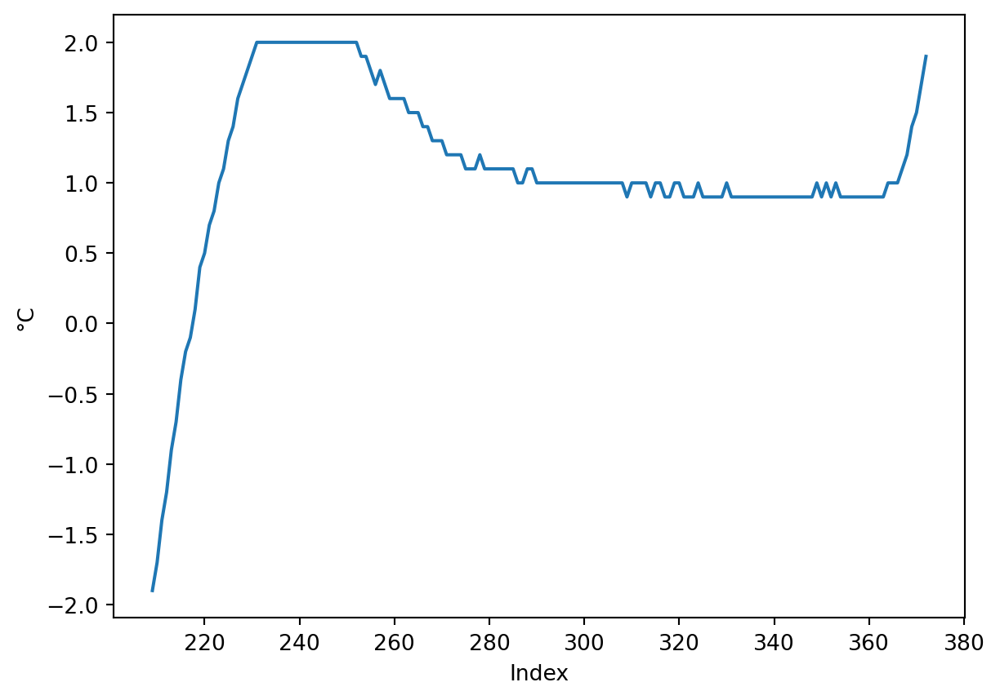
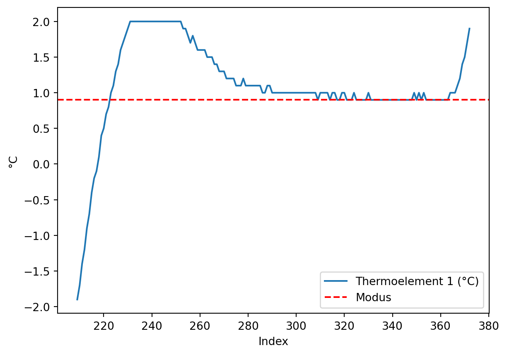
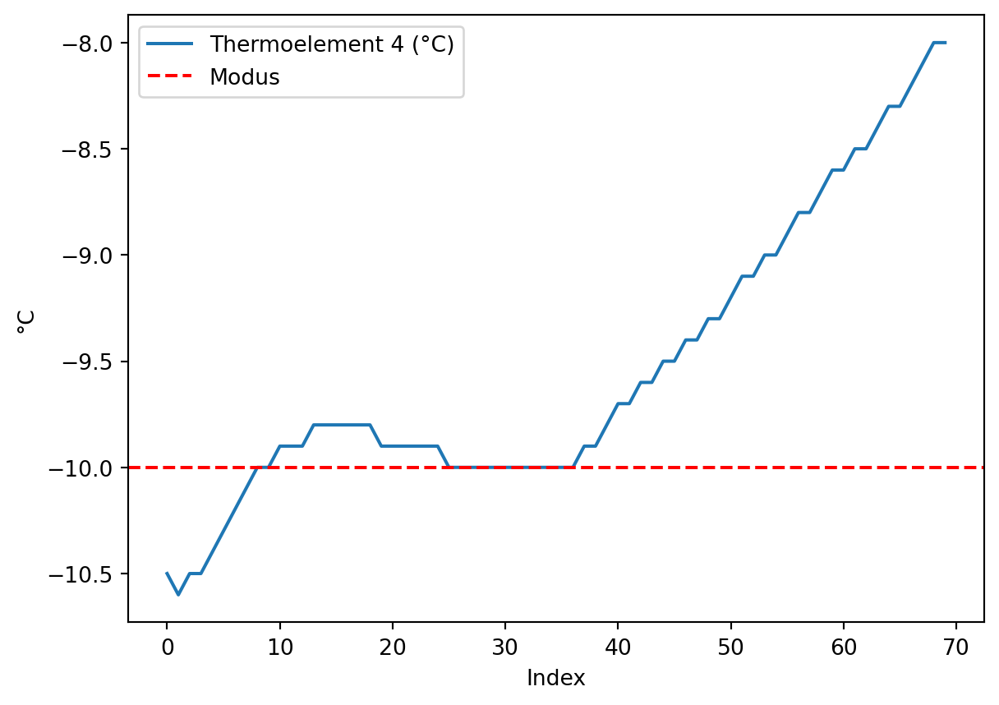
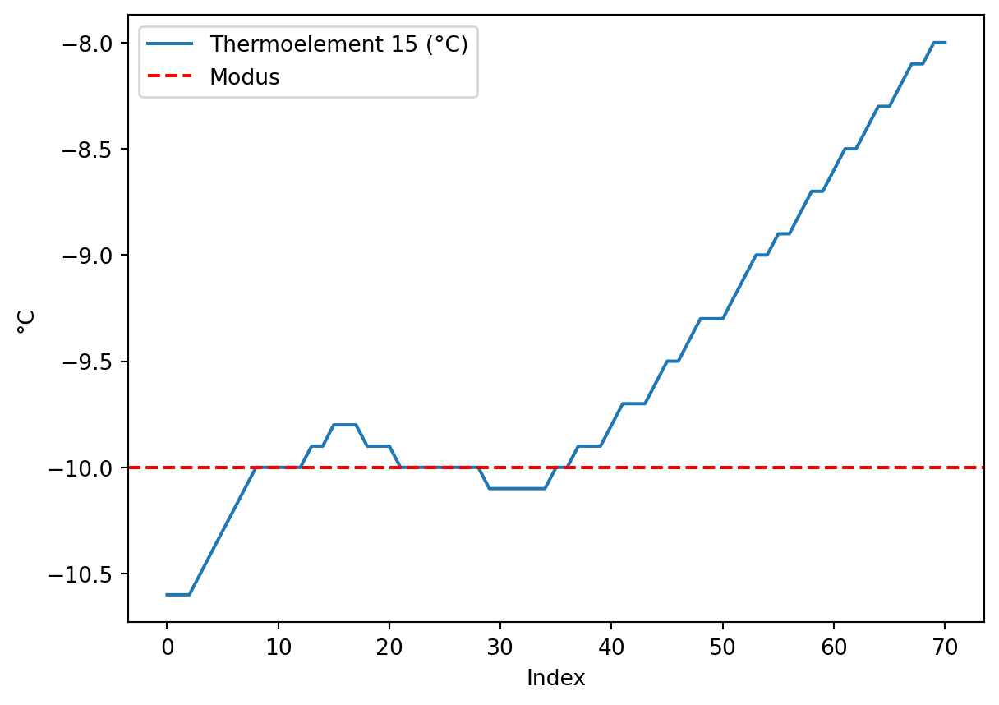
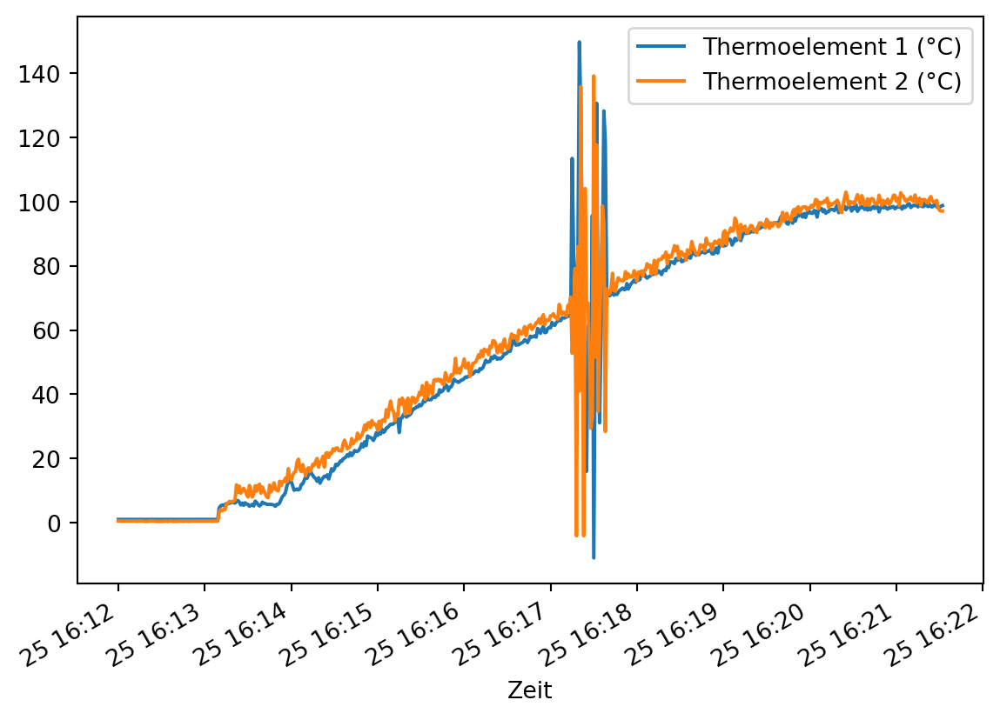
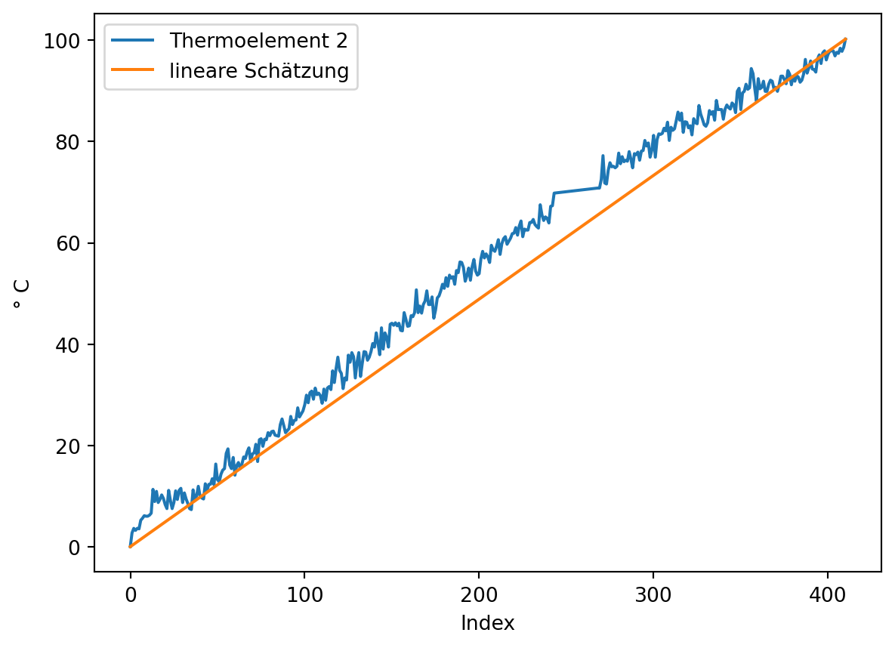

Daten Eiskochen nur als 2-Punkt-Kalibrierung behandeln
Referenzpunkte für 0 und 100 festlegen (mitteln) und Daten entsprechend kalibrieren
Daten dazwischen verwerfen, weil man nicht weiß, ob der Herd überhaupt linear heizt
praktische Kalibriermethode als Unterpunkt von Nullpunkt- und Spannfehler
Die Genauigkeit von Messungen wird durch die Korrektion systemtischer Messabweichungen verbessert. In diesem Kapitel werden typische Fehlerarten bei Messungen behandelt:
additive Fehler,
multiplikative Fehler und
Nichtlinearität.
Außerdem werden praktische Methoden der Kalibrierung vorgestellt. In diesem Abschnitt greifen wir die etablierten Begriffe auf, auch wenn die Fehler besser als systematische Messabweichungen bezeichnet werden sollten.
6.1 Kalibrieren und Justieren
Die Korrektion systemtischer Messabweichungen kann auf zwei Arten geschehen: durch Kalibrierung oder Justierung des Messgeräts.
Mit dem Begriff Kalibrierung wird im engeren Sinn die Ermittlung des Zusammenhangs zwischen Messwerten bzw. ihres arithmetischen Mittelwerts und dem vereinbarten richtigen Wert der Messgröße bezeichnet.
Definition 6.1: Kalibrierung nach DIN 1319
“Ermitteln des Zusammenhangs zwischen Meßwert […] oder Erwartungswert […] der Ausgangsgröße […] und dem zugehörigen wahren […] oder richtigen Wert […] der als Eingangsgröße vorliegenden Meßgröße für eine betrachtete Meßeinrichtung […].” (Deutsches Institut für Normung 1995, 22)
Im weiteren Sinn ist mit Kalibrierung auch “die Erstellung einer Korrektionstabelle […], die Ermittlung von Kalibrierfaktoren oder einer (empirischen) Kalibrierfunktion” (Deutsches Institut für Normung 1995, 22) gemeint. Dabei handelt es sich um Methoden, um mit systematischen Messabweichungen behaftete Messwerte zu korrigieren, ohne das Messgerät zu verändern.
Im Unterschied dazu verändert die Justierung das Messgerät dauerhaft.
Definition 6.2: Justierung nach DIN 1319
“Einstellen oder Abgleichen eines Meßgeräts […], um systematische Meßabweichungen […] soweit zu beseitigen, wie es für die vorgesehene Anwendung erforderlich ist.” (Deutsches Institut für Normung 1995, 22)
6.2 Kalibriermethoden nach DIN 1319
In der DIN 1319 werden drei Kalibriermethoden genannt, die hier nur kurz behandelt werden:
Korrektionstabelle,
Ermittlung von Kalibrierfaktoren und
Ermittlung einer (empirischen) Kalibrierfunktion.
Welche Methode verwendet wird, hängt von dem Anwendungsbereich, der Datenverfügbarkeit sowie von der gewünschten Genauigkeit ab.
Methode
Anwendung bei …
Vorteile
Nachteile
Korrektionstabelle
nichtlinear, schwer modellierbar
einfach zu nutzen
viele Daten erforderlich, sonst Interpolation ungenau
Kalibrierfaktoren
lineare Abweichung
leicht umsetzbar
unzureichend bei Nichtlinearität
Kalibrierfunktion
nichtlinear, modellierbar
sehr genau
höherer Aufwand
Korrektionstabelle
Mit der Korrektionstabelle können beliebige Korrektionen dargestellt werden, sofern ausreichend Datenpunkte verfügbar sind. In Kapitel 6.6.1 werden wir ein Beispiel für eine Korrektionstabelle kennenlernen.
Ermittlung von Kalibrierfaktoren
Ein Kalibrierfaktor kann angegeben werden, wenn eine konstante relative Abweichung vorliegt. Ein Beispiel aus der Praxis ist hier auf Seite 1 zu finden.
Der Nullpunktfehler beschreibt die Abweichung der Messgröße von Null, wenn der gesuchte Wert tatsächlich Null ist. Der Nullpunktfehler wird auch als Nullabgleich, Nullpunktverschiebung oder Offset-Fehler bezeichnet. Der Nullpunktfehler ist konstant und wirkt additiv auf jeden Messwert. (ics Schneider Messtechnik)
Der Nullpunktfehler kann leicht bestimmt werden, wenn Messwerte für den Nullpunkt vorliegen und der wahre Wert bekannt ist. (Wenn außerdem bekannt ist, dass keine weiteren systematischen Messabweichungen vorliegen, kann der Nullpunktfehler über einen beliebigen wahren Referenzwert bestimmt werden.) Für die zur grafischen Darstellung angelegten Daten ist dies der Fall.
Wenn keine Daten für den Nullpunkt vorliegen, kann der Nullpunktfehler mit linearer Regression aus mindestens zwei bekannten Referenzpunkten geschätzt werden. Dazu wird wird eine lineare Regression mit den bekannten Referenzwerten als unabhängige Größe \(x\) und den Messwerten als abhängige Größe \(y\) durchgeführt. Der y-Achsenabschnitt der Regressionsgeraden ist der Nullpunktfehler.
Eine Schätzung der Regressionsgeraden aus 2 Punkten ist im Allgemeinen weniger zuverlässig als eine Schätzung aus mehreren Messpunkten. Die Beispieldaten sind perfekt linear.
Grafisch wird das Vorgehen deutlich.
# lineare Funktionen berechnenlm_kennlinie = poly.polyfit(x = [x1, x2], y = [y1, y2], deg =1)geschätzte_ideale_kennlinie = poly.polyval(x = np.arange(messwerte.size), c = lm_kennlinie)lm_messwerte = poly.polyfit(x = [x1, x2], y = [messwerte[x1], messwerte[x2]], deg =1)lineare_funktion_messwerte = poly.polyval(x = np.arange(messwerte.size), c = lm_messwerte)# plotten## Punkteplt.plot([x1, x2], [y1, y2], marker ='o', linestyle ='none', color ='C0', label ='bekannte Referenzwerte')plt.plot([x1, x2], [messwerte[x1], messwerte[x2]], marker ='^', linestyle ='none', color ='C1', label ='Messwerte an Referenzpunkten')## Linienplt.plot(np.arange(messwerte.size), geschätzte_ideale_kennlinie, marker ='none', linestyle ='dashed', color ='C0', label ='ideale Kennlinie')plt.plot(np.arange(messwerte.size), lineare_funktion_messwerte , marker ='none', linestyle ='dashed', color ='C1', label ='lineare Funktion Messwerte')plt.plot([0, 0], [messgröße[0], messwerte[0]], linestyle ='dashed', label ='Nullpunktfehler', color ='red')plt.plot([4, 4], [messgröße[4], messwerte[4]], linestyle ='dashed', color ='red')plt.plot([8, 8], [messgröße[8], messwerte[8]], linestyle ='dashed', color ='red')plt.legend()plt.show()

Nullpunktfehler korrigieren
Der Nullpunktfehler wird durch Subtraktion von den Messwerten korrigiert.
Die Quantifizierung des Nullpunktfehlers ist manchmal schwierig, beispielsweise weil der wahre Nullpunkt einer Größe nur schwer vermessen werden kann oder die Messdaten nicht durch eine einfache Funktion approximiert werden können. In diesem Fall muss eine möglichst gute Schätzung gefunden werden.
In einem Klimaschrank wurden 16 Thermoelemente Temperaturen von -10 °C bis 140 °C in Schritten von 10 °C ausgesetzt. Die Messgenauigkeit des verwendeten Datenloggers TCTempX16 liegt bei 0,01 °C, die Auflösung bei 0,1 °C. Für die Thermoelemente soll der Nullpunktfehler bestimmt werden.
Hinweis 6.2: Nullpunkt
0 ° C auf der Celsius-Skala ist kein sinnvoller Referenzpunkt zur Bestimmung des Nullpunktfehlers, weil die Abwesenheit von Wärme erst bei -273,15 °C gegeben ist. Da der Nullpunktfehler über alle Messwerte konstant ist, kann der Nullpunktfehler geschätzt werden, indem für jede Temperaturstufe der Nullpunktfehler separat geschätzt und die Ergebnisse anschließend gemittelt werden.
Die Messdaten liegen in der Datei ‘01-daten/kalibration_tc.xlsx’. Die Daten können mit dem folgenden Befehl eingelesen werden.
Betrachten wir den Verlauf der Daten für die ersten beiden Thermoelemente. (In der Darstellung mit pd.plot() ist die automatisch gewählte x-Achsenbeschriftung unansehnlich. Deshalb wird ein Datenobjekt für die Darstellung angelegt und die Spalte ‘Zeit’ auf die Uhrzeit reduziert.)
Es ist zu erkennen, dass der Klimaschrank beim Aufheizen auf die nächste Zieltemperatur zunächst zu stark aufheizt, bevor die eingestellte Temperatur für einige Zeit konstant gehalten wird. Die Temperatur von 140 °C wird nur kurz erreicht, es liegen aber kaum Messwerte vor.
Bestimmen Sie nun den Nullpunktfehler für alle Thermoelemente.
Wählen Sie für jedes Thermoelement die Bereiche der Datenreihe für die Temperaturstufen -10 bis 130 °C aus.
Bestimmen Sie für jede Temperaturstufe die gemessene Temperatur im Bereich der Datenreihe, in der die Referenztemperatur konstant gehalten wird.
Berechnen Sie den Nullpunktfehler für jeden Ausschnitt der Datenreihe und mitteln Sie die Ergebnisse für jedes Thermoelement.
Tipp 6.1: Lösungshinweise
Tipp 1: Lagemaße wie der Median, Mittelwert oder der Modus können eine einfacher zu bestimmende Schätzgröße für den Nullpunktfehler sein.
Tipp 2: Gehen Sie schrittweise vor: Versuchen Sie zunächst, eine Temperaturstufe eines Thermoelements zu isolieren und die gemessene Temperatur im konstanten Bereich der Datenreihe zu bestimmen. Schreiben Sie anschließend eine Funktion, um den Programmcode für mehrere Thermoelemente und Temperaturstufen zu wiederholen.
Tipp 3: Eine gleichermaßen für 13 Temperaturstufen und 16 Thermoelemente geeignete Lösung dürfte kaum zu finden sein. Manchmal wird ein Wert gesucht, manchmal liegt der gesuchte Wert zwischen zwei Messwerten. Eine geringfügige Unsicherheit kann durch die Automatisierung in Kauf genommen werden.
Tipp 6.2: Musterlösung Thermoelemente
Lösung für ein Thermoelement.
Bereich der Datenreihe für eine Temperatur auswählen, z. B. 0 °C. Dazu grenzen wir die Messwerte grob um den gesuchten Wert \(0 \pm 2 °C\) ein.
# Thermoelement 1## Messwerte grob um den gesuchten Wert 0 °C eingrenzengesuchter_wert =0maske1 = klimaschrank['Thermoelement 1 (°C)'].le(gesuchter_wert +2) # le = kleiner gleichmaske2 = klimaschrank['Thermoelement 1 (°C)'].ge(gesuchter_wert -2) # ge = größer gleichklimaschrank.loc[maske1 * maske2, 'Thermoelement 1 (°C)'].plot()plt.xlabel(xlabel ='Index')plt.ylabel(ylabel ='°C')plt.show()

In diesem Ausschnitt kann das Überschießen der Messwerte beobachtet werden, bevor sich die Messwerte etwa bei + 1 °C einpendeln. Auch ist der Anstieg zur folgenden Temperaturstufe zu erkennen.
Im zweiten Schritt sollen die Daten im konstanten Temperaturbereich ausgewählt werden. Dazu soll ein möglichst einfaches Kriterium verwendet werden: der häufigste im Ausschnitt vorkommende Wert, also der Modus. Dazu wird die Methode pd.value_counts() verwendet, die eine absteigend sortierte Series der Häufigkeiten zurückgibt, wobei im Index die Werte gespeichert sind (siehe Beispiel). Der im Index gespeicherte häufigste Wert wird mit der Methode pd.idxmax() ausgelesen.
# Thermoelement 1## Messwerte grob um den gesuchten Wert 0 °C eingrenzenmaske1 = klimaschrank['Thermoelement 1 (°C)'].le(gesuchter_wert +2) # le = kleiner gleichmaske2 = klimaschrank['Thermoelement 1 (°C)'].ge(gesuchter_wert -2) # ge = größer gleich## häufigster Wert im eingegrenzten Temperaturbereichmodus_bereich = klimaschrank.loc[maske1 * maske2, 'Thermoelement 1 (°C)'].value_counts().idxmax()## Nullpunktfehler bestimmennullpunktfehler = modus_bereich - gesuchter_wertprint(f"Nullpunktfehler: {nullpunktfehler}")## plottenklimaschrank.loc[maske1 * maske2, 'Thermoelement 1 (°C)'].plot()plt.axhline(y = modus_bereich, color ='r', linestyle ='--', label ='Modus')plt.xlabel(xlabel ='Index')plt.ylabel(ylabel ='°C')plt.legend()plt.show()
Nullpunktfehler: 0.9

Der Nullpunktfehler für Thermoelement 1 wird somit mit 0,9 °C bestimmt.
Um die Berechnung für die verschiedenen Temperaturstufen zu automatisieren, schreiben wir eine Funktion.
# Eingabe: data = pd.Series, gesuchter_wert = array like, schwellwert, puffer = Skalar# Verarbeitung: Elementweise werden die Werte in gesuchter_Wert ± puffer in data gesucht# Verarbeitung: Die Differenz aus dem Modus jedes Datenausschnitts und dem gesuchten Wert wird als Nullpunktfehler interpretiert # Ausgabe: Wenn output = True wird DataFrame der gesuchten Werte und Nullpunktfehler ausgegeben, wenn output = False wird der mittlere Nullpunktefehler ausgegebendef nullpunktfehler(data, gesuchte_werte, puffer =2, output =False):# Zielobjekt und Zähler anlegen ausgabe = pd.DataFrame({'Gesuchter Wert': pd.Series(), 'Nullpunktfehler': pd.Series()}) i =0for gesuchter_wert in gesuchte_werte:## Messwerte grob um den gesuchten Wert eingrenzen maske1 = data.le(gesuchter_wert + puffer) # le = kleiner gleich maske2 = data.ge(gesuchter_wert - puffer) # ge = größer gleich## Kriterium häufigster Wert im eingegrenzten Temperaturbereich modus_bereich = data.loc[maske1 * maske2].value_counts().idxmax()# Nullpunktfehler bestimmen nullpunktfehler = modus_bereich - gesuchter_wert# Werte eintragen ausgabe.loc[i] = pd.Series([gesuchter_wert, nullpunktfehler]).values# Zähler erhöhen i +=1# Optional Ausgabeif output: # output is Trueprint(ausgabe)# Rückgabe der gemittelten Nullpunktfehlerreturn ausgabe['Nullpunktfehler'].mean()
6.4 Multiplikative Fehler: Der Empfindlichkeitsfehler
Als Empfindlichkeits- oder Spannfehler wird ein über den Wertebereich (die Spanne) der gesuchten Größe zu- oder abnehmender Fehler bezeichnet. Die relative Messabweichung \(\delta\) ist dabei konstant, die absolute Messabweichung abhängig vom Messwert. (ics Schneider Messtechnik)
Der Empfindlichkeitsfehler kann geschätzt werden, wenn Referenzwerte bekannt sind. Dazu wird das Verhältnis der Größenänderung (des Anstiegs) der gemessenen und der wahren Werte gebildet.
Der Anstieg der Messwerte: 0.67
Der Anstieg der idealen Kennlinie: 1.0
Der Empfindlichkeitsfehler beträgt: -33.33 %
Der Empfindlichkeitsfehler kann auch durch eine lineare Regression mit den bekannten Referenzwerten als unabhängige Größe \(x\) und den Messwerten als abhängige Größe \(y\) bestimmt werden. Der Anstieg der Regressionsgeraden ist der Empfindlichkeitsfehler.
In einem Klimaschrank wurden 16 Thermoelemente einem Temperaturanstieg von -10 °C bis 140 °C ausgesetzt. Die Messgenauigkeit des verwendeten Datenloggers TCTempX16 liegt bei 0,01 °C, die Auflösung bei 0,1 °C. Für die Thermoelemente soll der Empfindlichkeitsfehler bestimmt werden.
Die Messdaten liegen in der Datei ‘01-daten/kalibration_tc_lineare_rampe.xlsx’. Die Daten können mit dem folgenden Befehl eingelesen werden.
Betrachten wir den Verlauf der Daten für die ersten beiden Thermoelemente. (In der Darstellung mit pd.plot() ist die automatisch gewählte x-Achsenbeschriftung unansehnlich. Deshalb wird ein Datenobjekt für die Darstellung angelegt und die Spalte ‘Zeit’ auf die Uhrzeit reduziert.)
Die Messung startet kurz vor der Aufheizphase. Etwa 16:40 Uhr wurde der Klimaschrank abgeschalten. Die Messung lief danach noch einige Zeit weiter. Es müssen also der Start- und der Endpunkt der Aufheizphase bestimmt werden.
In diesem Beispiel soll angenommen werden, dass bei der Messung kein Nullpunktfehler vorliegt. Dazu suchen wir mit der Funktion aus Tipp 6.2 passende Messreihen. Aus dem anfänglich konstanten Bereich -10 °C wird der Nullpunktfehler bestimmt.
# Thermoelement 4gesuchter_wert =-10## Messwerte grob um den gesuchten Wert 0 °C eingrenzenmaske1 = klimaschrank['Thermoelement 4 (°C)'].le(gesuchter_wert +2) # le = kleiner gleichmaske2 = klimaschrank['Thermoelement 4 (°C)'].ge(gesuchter_wert -2) # ge = größer gleich## häufigster Wert im eingegrenzten Temperaturbereichmodus_bereich = klimaschrank.loc[maske1 * maske2, 'Thermoelement 4 (°C)'].value_counts().idxmax()## Nullpunktfehler bestimmennullpunktfehler = modus_bereich - gesuchter_wertprint(f"Nullpunktfehler: {nullpunktfehler}")## plottenklimaschrank.loc[maske1 * maske2, 'Thermoelement 4 (°C)'].plot()plt.axhline(y = modus_bereich, color ='r', linestyle ='--', label ='Modus')plt.xlabel(xlabel ='Index')plt.ylabel(ylabel ='°C')plt.legend()plt.show()
Nullpunktfehler: 0.0

# Thermoelement 15gesuchter_wert =-10## Messwerte grob um den gesuchten Wert 0 °C eingrenzenmaske1 = klimaschrank['Thermoelement 15 (°C)'].le(gesuchter_wert +2) # le = kleiner gleichmaske2 = klimaschrank['Thermoelement 15 (°C)'].ge(gesuchter_wert -2) # ge = größer gleich## häufigster Wert im eingegrenzten Temperaturbereichmodus_bereich = klimaschrank.loc[maske1 * maske2, 'Thermoelement 15 (°C)'].value_counts().idxmax()## Nullpunktfehler bestimmennullpunktfehler = modus_bereich - gesuchter_wertprint(f"Nullpunktfehler: {nullpunktfehler}")## plottenklimaschrank.loc[maske1 * maske2, 'Thermoelement 15 (°C)'].plot()plt.axhline(y = modus_bereich, color ='r', linestyle ='--', label ='Modus')plt.xlabel(xlabel ='Index')plt.ylabel(ylabel ='°C')plt.legend()plt.show()
Nullpunktfehler: 0.0

Bestimmen Sie den Empfindlichkeitsfehler für Thermoelement 4 und Thermoelement 15. Das wahre Minimum der Temperatur betrage -10 °C und das wahre Maximum betrage 140 °C.
Bestimmen Sie den Startpunkt der Aufheizphase.
Bestimmen Sie den Endpunkt der Aufheizphase.
Schätzen Sie eine ideale Kennlinie von -10 °C bis 140 °C für die Aufheizphase.
Ermitteln und korrigieren Sie den Empfindlichkeitsfehler in den Daten.
Tipp 6.3: Musterlösung Empfindlichkeitsfehler
Startpunkt ermitteln, indem die Position des letzten Werts -10 °C bestimmt wird.
print(f"Messreihe Thermoeelement 4 von Index {start4} bis Index {ende4}.",f"Messreihe Thermoeelement 15 von Index {start15} bis Index {ende15}.", sep ='\n')
Messreihe Thermoeelement 4 von Index 36 bis Index 2187.
Messreihe Thermoeelement 15 von Index 36 bis Index 2188.
Ideale Kennlinie und lineare Funktion der Messwerte schätzen, Empfindlichkeitsfehler bestimmen.
Bezeichnung und Berechnung / Korrektion Spannfehler ändern
Berechnung des Nullpunktfehlers ändern
Absolute und multiplikative Abweichungen können gemeinsam auftreten. In diesem Beispiel wird die absolute Messabweichung über den dargestellten Wertebereich kleiner, da der Nullpunktfehler mit positivem Vorzeichen und der Empfindlichkeitsfehler mit negativen Vorzeichen auftreten.
Nullpunkt- und Empfindlichkeitsfehler quantifizieren
Aus mindestens zwei bekannten Referenzpunkten können mit linearer Regression der Nullpunkt- und der Empfindlichkeitsfehler geschätzt werden. In der linearen Regression wird ein bei 0 beginnender Index für die x-Werte verwendet. Um den Nullpunktfehler korrekt ermitteln zu können, wird dieser Index um den geschätzten wahren Nullpunkt verschoben.
Wenn der Anstieg nicht 1 ist, wird der Nullpunktfehler falsch ermittelt
Deshalb anderes Verfahren: lineare Regression mit x der wahre Wert und y der Messwert, siehe oben bei Nullpunktfehler
Die Steigung gibt die Empfindlichkeit an. Der Achsenabschnitt entspricht dem Nullpunktfehler.
# Daten erzeugenmessgröße = np.arange(0, 11) *2+7messwerte = messgröße +24- messgröße /3print(messgröße[0])print(messwerte[0])# bekannte Referenzpunktex1 =4x2 =8y1 = messgröße[x1]y2 = messgröße[x2]# ideale Kennlinie schätzenlm_kennlinie = poly.polyfit(x = [x1, x2], y = [y1, y2], deg =1)print(f"lm_kennlinie: {lm_kennlinie}")# lineare Regression der Messwertelm_messwerte = poly.polyfit(x = np.arange(messwerte.size), y = messwerte, deg =1)print(f"lm_messwerte: {lm_messwerte}")# lineare Regression der Messwerte plus y-Achsenschnittpunkt der idealen Kennlinielm_messwerte_plus_intercept_kennlinie = poly.polyfit(np.arange(messwerte.size) + lm_kennlinie[0], messwerte, 1)print(f"lm_messwerte_plus_intercept_kennlinie: {lm_messwerte_plus_intercept_kennlinie}")# Nullpunktfehler bestimmennullpunktfehler = lm_messwerte_plus_intercept_kennlinie[0]print(f"Der Nullpunktfehler beträgt: {nullpunktfehler.round(2)}")# Empfindlichkeitsfehler bestimmenspannfehler = lm_messwerte_plus_intercept_kennlinie[1] / lm_kennlinie[1]print(f"Der Empfindlichkeitsfehler beträgt: {((spannfehler -1) *100).round(2)} %")# anderes Verfahren: lineare Regression mit x der wahre Wert und y der Messwertlm_verfahren = poly.polyfit(x = [messgröße[x1], messgröße[x2]], y = [messwerte[x1], messwerte[x2]], deg =1)print(50*'=')print(lm_verfahren)
Bei der Korrektur von Nullpunkt- und Empfindlichkeitsfehler unterscheidet sich das Vorgehen abhängig von der Reihenfolge der vorgenommenen Korrekturen.
Zuerst wird der Nullpunktfehler korrigiert, danach der Empfindlichkeitsfehler.
Simones Vorgehen führt zu korrekt kalibrierten Messwerten. Die Variable a ist der Korrekturfaktor für den Empfindlichkeitsfehler. Die Variable b ist die Nullpunktkorrektur, wenn erst der Empfindlichkeitsfehler korrigiert wird.
Das hat etwas mit der Konstruktion der Daten bzw. der Korrektur zu tun. b ist die Korrektur des Nullpunktfehlers * Empfindlichkeitsfehler. Das heißt aus der Arnoldformel kann der Nullpunktfehler als \(-1 * {b \over a}\) ermittelt werden.
Übung Nullpunkt- und Empfindlichkeitsfehler
to do: hier könnte man andere Thermoelemente aus der letzten Übung verwenden
6.6 Nichtlinearität: Linearitätsfehler
Bei einer idealen Messung hängt der gesuchte Wert linear vom gemessenen Wert ab. Viele analoge Sensoren reagieren aufgrund von Materialeigenschaften oder abhängig von der Temperatur nicht linear auf die gemessene Größe. Das heißt, die Messwerte sind nicht direkt proportional zur Messgröße. Dieser sogenannte Linearitätsfehler muss korrigiert werden, um genau zu messen.
Dafür gibt es zwei Möglichkeiten. Zum einen können nicht lineare Verfahren zur Parameterschätzung verwendet werden, was im Methodenbaustein Datenfitting und Datenoptimierung behandelt wird. Zum anderen kann der Liniearitätsfehler korrigiert werden, um mit den leichter zu handhabenden linearen Verfahren der Parameterschätzung arbeiten zu können. Die Korrektion von Linearitätsfehlern wird in diesem Kapitel behandelt.
Beispiel Pt100
Das Pt100 ist ein Platin-Widerstandsthermometer (Pt = Platin) mit einem definierten Widerstandswert von \(100 \Omega\) bei einer Temperatur von 0°C (daher der Name Pt100). Der Widerstand eines Pt100 steigt mit der Temperatur. Bei 100 °C beträgt der Widerstand beispielsweise \(138,51 \Omega\). Der Zusammenhang zwischen der Eingangsgröße, dem elektrischen Widerstand, und der so gemessenen Temperatur ist jedoch nur näherungsweise linear.
Die Eigenschaften eines Pt100 Widerstandes sind in der Norm DIN EN IEC 60751 (Deutsches Institut für Normung 2023) festgelegt. Dort wird der Zusammenhang durch zwei Polynome für den Temperaturbereich von -200 °C bis 0 °C und für den Temperaturbereich von 0 °C bis 850 °C beschrieben.
Für den Temperaturbereich –200 °C bis 0 °C: \[
R_T = R_0 \cdot \left(1 + A \cdot T + B \cdot T^2 + C \cdot (T - 100 ^\circ\text{C}) \cdot T^3\right)
\]
Für den Temperaturbereich von 0 °C bis +850 °C: \[
R_T = R_0 \cdot \left(1 + A \cdot T + B \cdot T^2\right)
\]
Dabei gilt:
\(R_T\) ist der Widerstand bei der Temperatur \(T\),
\(R_0\) ist der Widerstand bei \(0^\circ\text{C}\),
\(A\), \(B\) und \(C\) sind Konstanten, die den spezifischen Charakter des Sensors beschreiben. Dabei sind:
Im Anhang der Norm befinden sich Tabellen, die die Beziehung zwischen Temperatur und gemessenem Widerstand wiedergeben. Das Format der Tabellen erlaubt es, aus einem gemessenen Widerstandswert schnell die gemessene Temperatur zu ermitteln. Dazu sind in der ersten Spalte die Temperaturen in Zehnerschritten, in den folgenden zehn Spalten die Einerstelle eingetragen. Für Temperaturen unter Null ist die Einerstelle jeweils zu subtrahieren (erkennbar am Vorzeichen \(-\)), für Temperaturen über Null dagegen zu addieren (erkennbar am Vorzeichen \(+\)). Eine zusammengefasste Darstellung finden Sie zum Beispiel hier.
Die Notation \(t_{90} / °C\) beruht auf der Internationalen Temperaturskala ITS-90 von 1990, die Temperaturen \(T_{90}\) in Kelvin und \(t_{90}\) in Grad Celsius definiert. Die Notation zeigt also an, dass in der Tabelle Angaben in Grad Celsius stehen. (Deutsches Institut für Normung (2023), S. 10)
Aufgabe Pt100-Tabelle einlesen
Für die Datenanalyse ist das tabellarische Format weniger geeignet. Die hier zusammengefasste Darstellung wurde in zwei CSV-Dateien kopiert. Lesen Sie die Dateien so ein, dass der elektrische Widerstand und die Temperatur jeweils eine aufsteigende Datenreihe bilden (z. B. als Liste, NumPy-Array oder eine Pandas-Datenstruktur). Die Dateipfade lauten:
Es gibt 201 Werte (von -200 bis 0). Die Daten beginnen in der Zeile mit dem Index 1 (wenn die erste Zeile als header eingelesen wird). Diese enthält nur einen Eintrag in der Spalte ‘0’. Die folgenden Zeilen sind von rechts nach links einzulesen. Das Dezimaltrennzeichen ist das ,.
Das Einlesen der Daten von rechts nach links kann auf viele Arten bewerkstelligt werden. Eine einzeilige Lösung beginnt damit, der Methode pd.iloc[::-1] eine negative Schrittweite zu übergeben.
Das führt dazu, dass die Zeilen des DataFrame in umgekehrter Reihenfolge ausgegeben werden. Um die Spalten in umgekehrter Reihenfolge auszugeben, wird der DataFrame mit der Methode pd.T zwei mal transponiert.
print(df.T.iloc[::-1].T)
2 1 0
0 1 2 3
1 4 5 6
Mit der NumPy-Methode np.flatten() kann ein Array in eine eindimensionale Struktur reduziert werden. Dafür wird mit der Methode pd.to_numpy() der DataFrame als NumPy-Array ausgegeben.
Für die Temperaturen oberhalb von 0 Grad kann das Vorgehen vereinfacht werden, da die Datei gleich aufgebaut ist und die Werte aufsteigend sortiert sind.
Es fällt auf, dass die Daten einen Fehlwert enthalten. Die Position des Fehlwerts wird mit zwei Pandas-Methoden bestimmt. pd.diff() gibt die Differenz jedes Werts zu seinem Vorgänger zurück. pd.idxmin() gibt den Zeilenindex (genauer das label) des kleinsten Werts zurück. (Läge der Fehlwert oberhalb der Linie, würde pd.idxmax() verwendet werden.)
# := ist der sog. Walross-Operatorprint(( position_fehlwert := pt100['Ohm'].diff().idxmin() ))print(pt100.iloc[list(range(position_fehlwert -2, position_fehlwert +3))])
Der korrekte Wert kann aus der DIN-Norm (Deutsches Institut für Normung 2023, 26) abgelesen werden (153,96). Man könnte den Wert aber auch interpolieren (siehe Beispiel).
Beispiel 6.3: Interpolation
Die einfachste Form der Interpolation ist die lineare Interpolation.
Zwei Methoden zur Quantifizierung der Nichtliniearität sind die Festpunkt- und die Toleranzbandmethode.
Festpunktmethode
Definition 6.3: Festpunktmethode
Die Endpunkte der realen Kennlinie werden durch eine Gerade verbunden. Der Linearitätsfehler ist das Maximum der Abweichung der Kennlinie zu dieser Geraden. (Grote und Feldhusen 2011, W2–3 (S. 1661-1662))
Dazu bestimmen wir zunächst die Vorhersagewerte einer Geraden durch die Endpunkte.
lm = poly.polyfit( x = [pt100['Temperatur'].iloc[0], pt100['Temperatur'].iloc[-1]], y = [pt100['Ohm'].iloc[0], pt100['Ohm'].iloc[-1]], deg =1)print(lm.round(2)) # intercept + slopevorhersagewerte = poly.polyval(x = pt100['Temperatur'], c = lm)plt.plot(pt100['Temperatur'], pt100['Ohm'], marker ='o', linestyle ='', label ='elektrischer Widerstand', alpha =0.6)plt.plot(pt100['Temperatur'], vorhersagewerte, linewidth =2, label ='Vorhersagewerte endpunktverbindende Gerade')plt.yticks(pt100['Ohm'][::50]);plt.xlabel('Temperatur in °C')plt.ylabel('elektrischer Widerstand in Ohm')plt.grid()plt.legend()plt.show()
[89.37 0.35]
Aus der Differenz des gemessenen elektrischen Widerstands und der linearen Vorhersagewerte kann der maximale Linearitätsfehler bestimmt werden.
linearitätsfehler = (pt100['Ohm'] - vorhersagewerte).abs().max()print(f"Linearitätsfehler nach Festpunktmethode: {linearitätsfehler:.2f} Ohm.")
Linearitätsfehler nach Festpunktmethode: 16.43 Ohm.
Toleranzbandmethode
Definition 6.4: Toleranzbandmethode
Bei der Toleranzbandmethode wird eine Gerade so durch die Messpunkte gelegt, dass die Summe der quadrierten Abweichungen der Messpunkte zu dieser Geraden (Methode der kleinsten Quadrate) oder die größte einzelne Abweichung (Tschebyscheff-Approximation) minimiert wird. Die Größe des Linearitätsfehlers ist die maximale senkrechte Entfernung der Kennlinie zu dieser Ausgleichsgeraden. (Grote und Feldhusen 2011, W3 (S. 1662))
Das Prinzip der Methode der kleinsten Quadrate haben wir bereits kennengelernt.
lm = poly.polyfit( x = pt100['Temperatur'], y = pt100['Ohm'], deg =1)print(lm.round(2)) # intercept + slopevorhersagewerte = poly.polyval(x = pt100['Temperatur'], c = lm)plt.plot(pt100['Temperatur'], pt100['Ohm'], marker ='o', linestyle ='', label ='elektrischer Widerstand', alpha =0.6)plt.plot(pt100['Temperatur'], vorhersagewerte, linewidth =2, label ='Regressionsgerade')plt.yticks(pt100['Ohm'][::50]);plt.xlabel('Temperatur in °C')plt.ylabel('elektrischer Widerstand in Ohm')plt.grid()plt.legend()plt.show()
[100.67 0.35]
Aus der Differenz des gemessenen elektrischen Widerstands und der linearen Vorhersagewerte kann der maximale Linearitätsfehler (= das größte Residuum) bestimmt werden.
linearitätsfehler = (pt100['Ohm'] - vorhersagewerte).abs().max()print(f"Linearitätsfehler nach Toleranzbandmethode: {linearitätsfehler:.2f} Ohm.")
Linearitätsfehler nach Toleranzbandmethode: 11.45 Ohm.
6.7 Die Zweipunktkalibrierung
Die Parameterschätzung mit linearer Regression nach der Toleranzbandmethode führt zur besten linearen Approximation von Messwerten (da die als Fehler zu interpretierenden Residuen minimiert werden). Nicht-lineares Messverhalten oder Daten mit größeren Messungenauigkeiten behaftete Daten führen aber fast zwangsläufig einen Nullpunktfehler in die geschätzte Gerade ein.
Die Festpunktmethode umgeht dieses Problem, führt aber zu einem größeren Linearitätsfehler. Die Kalibrierung nach der Festpunktmethode kann über zwei bekannte Fixpunkte berechnet werden, wenn ein linearer Zusammenhang in den Daten besteht.
Die Variable a ist der Korrekturfaktor für den Empfindlichkeitsfehler. Die Variable b ist die Nullpunktkorrektur, nachdem der Empfindlichkeitsfehler korrigiert wurde. Der Empfindlichkeitsfehler kann als \({1 \over a} - 1\) ermittelt werden. Der Nullpunktfehler kann als \(-1 * {b \over a}\) ermittelt werden.
print(f"Empfindlichkeitsfehler: {round( ((1/ a) -1) *100, 2)} %")print(f"Nullpunktfehler: {round(-1* b / a, 2)}")
In einem thermodynamischen Feldlabor wurde ein induktives Heizelement benutzt, um Eiswasser in einem metallischen Flüssigkeitsbehälter mit hoher Wärmeleitfähigkeit zum Kochen zu bringen. Mit einer nichtleitenden Halterung wurden zwei Thermoelemente eines Widerstandsthermometers fixiert. Ein TCTempX16 und eine automatische Protokolleinheit zeichneten die Daten auf.
Als Übung das gekochte Eis verwenden. (man muss den Nullpunkt und 100 Grad als Referenzwerte nehmen). Das Problem ist, dass das Eiskochen auch nichtlinear ist (ab 50 °C). Beachten, man hat keinen Referenzwert für den Nullpunkt (der liegt bei -273 °C), man muss also mit linearer Regression schätzen. Vermutlich muss man dafür nicht in Kelvin umrechnen, wegen der absoluten Verschiebung. –> Dass man nicht verschieben braucht, haben wir ja für die Berechnung ohne Messwerte für den Nullpunkt gezeigt.
Die Nichtlinearität ist kein Fehler des Sensorsystems, sondern ein physikalischer Effekt. Wie gehen wir damit um? –> man könnte sagen, dass der Effekt über den linear geschätzten Spannfehler approximiert wird. Zwischen nichtlinearer Messwertekurve und dem linear geschätzten Spannfehler entsteht dann ein Linearitätsfehler
Das Problem ist, dass die Daten bereinigt werden müssen, ohne sie zu interpolieren oder zu glätten –> mit linearem Trend und sd arbeiten oder auf den Baustein datenfitting und datenoptimierung verweisen.
Datei einlesen und Daten darstellen
Die Messreihe ist in der Datei ‘01-daten/Eis_Messung_1.xlsx’ im Tabellenblatt ‘T15949 MultiChannel - Daten’ gespeichert.
Lesen Sie die Datei ein und bereiten Sie die Daten für die weitere Analyse auf.
Welches Format haben die Daten?
Gibt es fehlende Werte und falls ja, wie sind diese kodiert?
Gibt es fehlerhafte Werte?
to do: Messgenauigkeit aus den Metadaten recherchieren lassen (Als Übungsaufgabe unten)
eis = pd.read_excel(io ='01-daten/Eis_Messung_1.xlsx', sheet_name ='T15949 MultiChannel - Daten')print(eis.head(n =10))
Gerätename: Unnamed: 1 \
0 Gerätebeschreibung: NaN
1 Serien-Nummer: NaN
2 Geräte-ID: NaN
3 NaN NaN
4 NaN NaN
5 Datum Zeit
6 2025-09-25 16:12:00 2025-09-25 16:12:00
7 2025-09-25 16:12:01 2025-09-25 16:12:01
8 2025-09-25 16:12:02 2025-09-25 16:12:02
9 2025-09-25 16:12:03 2025-09-25 16:12:03
TCTempX16 \
0 16-Kanal Thermoelement Temperatur-Datenlogger
1 T15949
2 MultiChannel
3 NaN
4 Kanal 2
5 Thermoelement 1 (°C)
6 1
7 1
8 1
9 1
TCTempX16.1
0 16-Kanal Thermoelement Temperatur-Datenlogger
1 T15949
2 MultiChannel
3 NaN
4 Kanal 4
5 Thermoelement 2 (°C)
6 0.5
7 0.5
8 0.5
9 0.5
Im Kopf des Tabellenblatts stehen Metadaten der Messung. Es gibt vier Spalten mit Daten: Datum und Zeit sowie die Messreihen der beiden Thermoelemente.
Die Daten wurden korrekt eingelesen. Mit der Methode pd.describe() wird der Wertebereich der Spalten überprüft, um numerisch kodierte fehlende oder fehlerhafte Werte zu identifizieren.
print(eis.describe())
Datum Zeit \
count 565 565
mean 2025-09-25 16:16:47.024778 2025-09-25 16:16:47.024778
min 2025-09-25 16:12:00 2025-09-25 16:12:00
25% 2025-09-25 16:14:25 2025-09-25 16:14:25
50% 2025-09-25 16:16:47 2025-09-25 16:16:47
75% 2025-09-25 16:19:09 2025-09-25 16:19:09
max 2025-09-25 16:21:32 2025-09-25 16:21:32
std NaN NaN
Thermoelement 1 (°C) Thermoelement 2 (°C)
count 565.000000 565.000000
mean 53.581239 55.451858
min -11.000000 -4.100000
25% 14.900000 20.300000
50% 56.200000 58.300000
75% 90.300000 91.200000
max 149.800000 139.200000
std 36.886184 36.542679
Die Spalten Datum und Zeit enthalten die selben Informationen. Eine der beiden Spalten kann deshalb entfernt werden. Die Temperaturmessungen sollten näher betrachtet werden. Eishaltiges Wasser, das zum Kochen gebracht wird, sollte sich in einem Temperaturbereich von 0 bis 100 °C bewegen.
eis.drop(labels ='Datum', axis =1, inplace =True)
Wir stellen den Datensatz grafisch dar.
eis.plot(x ='Zeit', y = ['Thermoelement 1 (°C)', 'Thermoelement 2 (°C)'])

Etwa in der Mitte des Datensatzes verzeichnen beide Sensoren extreme Fehlwerte. Diese sollen entfernt werden.
In einem bestimmten Abschnitt scheinen keine gültigen Werte vorzuliegen und diese sollen als ungültig markiert werden. Dazu betrachten wir zunächst die typische Veränderung der Messwerte, also die Differenz jedes Werts zu seinem Vorgänger mit der Methode pd.Series.diff(). Ebenfalls wird die Veränderung in studentisierten z-Werten ausgedrückt.
Die z-Werte werden mit der scipy-Funktion scipy.stats.zscore(a, ddof = 1, nan_policy = 'omit')) ermittelt. a steht für array-artige Daten, ddof = 1 spezifiziert die Stichprobenstandardabweichung und das Argument nan_policy = 'omit' wird verwendet, um mit dem Wert np.nan an der ersten Stelle arbeiten zu können, der aus der Berechnung der Veränderung entsteht, da für den ersten Wert einer Reihe kein gültiger Wert berechnet werden kann.
Hinweis 6.3: np.diff() und pd.diff()
NumPy und Pandas verfügen über eine Funktion diff. Diese verhalten sich standardmäßig unterschiedlich. Um die Länge einer Datenreihe mit np.diff() zu erhalten, können die Parameter prepend oder append verwendet werden, um der Datenreihe vor Ausführung der Operation einen Wert voranzustellen oder einen Wert anzuhängen. So bleiben die Länge der Datenreihe und die Indexpositionen der Werte erhalten.
Die Position der ungültigen Werte kann sowohl über eine sinnvolle Schwelle der (absoluten) Temperaturveränderung oder der absoluten z-Werte bestimmt werden. In diesem Fall verwenden wir die absolute Temperaturveränderung und wählen den Schwellwert 10. Es wird die Position des ersten und des letzten Werts, der oberhalb dieses Schwellwerts liegt, bestimmt.
# absolute Änderung bestimmendiff_thermoelement_1 = eis['Thermoelement 1 (°C)'].diff().abs()diff_thermoelement_2 = eis['Thermoelement 2 (°C)'].diff().abs()# Schwellwert festlegen und prüfenschwellwert =10bool_series_thermoelement_1 = diff_thermoelement_1 > schwellwertbool_series_thermoelement_2 = diff_thermoelement_2 > schwellwert# ersten und letzten Wert größer Schwellwert finden## Thermoelement 1### Wo steht nicht False?### np.nonzero() gibt ein Tupel zurück### Dieses enthält für jede Dimension ein array der Indexwertepositionen_thermoelement_1 = np.nonzero(bool_series_thermoelement_1)## Thermoelement 2### Wo steht nicht False?### np.nonzero() gibt ein Tupel zurück### Dieses enthält für jede Dimension ein array der Indexwertepositionen_thermoelement_2 = np.nonzero(bool_series_thermoelement_2)# Ausgabe## Thermoelement 1print("Thermoelement 1")print(51*"=")print("Anzahl der Temperaturänderungen mit Betrag > 10:", bool_series_thermoelement_1.sum())print(f"Die Position des ersten Werts: {positionen_thermoelement_1[0][0]}")print(f"Die Position des letzten Werts: {positionen_thermoelement_1[0][-1]}")## Thermoelement 2print("\nThermoelement 2")print(51*"=")print("Anzahl der Temperaturänderungen mit Betrag > 10:", bool_series_thermoelement_2.sum())print(f"Die Position des ersten Werts: {positionen_thermoelement_2[0][0]}")print(f"Die Position des letzten Werts: {positionen_thermoelement_2[0][-1]}")
Thermoelement 1
===================================================
Anzahl der Temperaturänderungen mit Betrag > 10: 20
Die Position des ersten Werts: 310
Die Position des letzten Werts: 333
Thermoelement 2
===================================================
Anzahl der Temperaturänderungen mit Betrag > 10: 20
Die Position des ersten Werts: 310
Die Position des letzten Werts: 333
Für beide Thermoelemente kann der gleiche Bereich als ungültig markiert werden. Vor der weiteren Bearbeitung wird eine Kopie des aufgeräumten Datensatzes erstellt.
von = positionen_thermoelement_1[0][0]bis = positionen_thermoelement_1[0][-1]eis.loc[von : bis, ['Thermoelement 1 (°C)', 'Thermoelement 2 (°C)']] = np.nan# Kopie von eis anlegeneis_backup = eis.copy()
Der Datensatz wird dargestellt. (In der Darstellung mit pd.plot() ist die automatisch gewählte x-Achsenbeschriftung unansehnlich. Deshalb wird ein Datenobjekt für die Darstellung angelegt und die Spalte ‘Zeit’ auf die Uhrzeit reduziert.)
Aus diesen Daten können der Nullpunkt- und der Spannfehler quantifiziert werden. Als Referenzpunkte sind die Temperaturen 0 und 100 Grad Celsius bekannt: Solange ohne Energiezufuhr Eis im Wasser schwimmt, hat es 0 °C, und bei 100 °C erreicht das Wasser seinen Siedepunkt.
Für die wahre Temperatur 0 °C sind viele Messpunkte verfügbar. Schauen wir uns die ersten 100 Messwerte an:
eis.loc[0 : 100, ['Thermoelement 1 (°C)', 'Thermoelement 2 (°C)']].plot(xlabel ='Index', ylabel ='gemessene Temperatur in °C')
Der Zeitpunkt, ab dem die Wärmezufuhr beginnt, kann z. B. mit der Methode pd.diff() ermittelt werden:
Da das Thermoelement 1 leichte Messabweichungen aufweist, wird ein Schwellwert etwas größer als 0 gewählt. Damit wird die Position des ersten Werts bestimmt, der oberhalb des Schwellwerts liegt.
# absolute Änderung bestimmendiff_thermoelement_1 = eis.loc[0 : 100, 'Thermoelement 1 (°C)'].diff().abs()diff_thermoelement_2 = eis.loc[0 : 100, 'Thermoelement 2 (°C)'].diff().abs()# Schwellwert festlegen und prüfenschwellwert =0.2bool_series_thermoelement_1 = diff_thermoelement_1 > schwellwertbool_series_thermoelement_2 = diff_thermoelement_2 > schwellwert# ersten Wert größer Schwellwert finden## Thermoelement 1### Wo steht nicht False?### np.nonzero() gibt ein Tupel zurück### Dieses enthält für jede Dimension ein array der Indexwertepositionen_thermoelement_1 = np.nonzero(bool_series_thermoelement_1)## Thermoelement 2### Wo steht nicht False?### np.nonzero() gibt ein Tupel zurück### Dieses enthält für jede Dimension ein array der Indexwertepositionen_thermoelement_2 = np.nonzero(bool_series_thermoelement_2)# Ausgabe## Thermoelement 1print("Thermoelement 1")print(f"Die Position des ersten Werts: {positionen_thermoelement_1[0][0]}")## Thermoelement 2print("\nThermoelement 2")print(f"Die Position des ersten Werts: {positionen_thermoelement_2[0][0]}")
Thermoelement 1
Die Position des ersten Werts: 67
Thermoelement 2
Die Position des ersten Werts: 67
Die Wärmezufuhr beginnt also bei dem Wert an Indexposition 67. Der Nullpunkt der Messreihe liegt somit an der Indexposition 67 - 1.
start_wärmezufuhr =67start = start_wärmezufuhr -1
Somit kann der Nullpunktfehler nun für beide Thermoelemente aus der Differenz zwischen dem Mittelwert der gemessenen Werte bis exklusiv Indexposition 67 und dem wahren Wert 0 direkt berechnet werden. Diese Position haben wir in der Variable start gespeichert, die für beide Thermoelemente gilt.
Der Punkt, an dem das Wasser siedet, ist nicht so einfach zu bestimmen. Starke Messabweichungen erzeugen ein verrauschtes Bild. Um die grafische Analyse zu erleichtern wurden für beide Messreihen der gleitende Durchschnitt sowie der Mittelwert der geglätten Messreihen eingezeichnet. Die Techniken dafür werden im Methodenbaustein Datenfitting und Datenoptimierung vermittelt.
Maximum der gemittelten, geglätteten Messreihen: 99.13
An Indexposition: 535
Zu bedenken ist:
MF: Die Temperatur, bei der Wasser beim Luftdruck in Deutschland kocht, ist tatsächlich eher 99,4°C. Dieser Rechner und 1007 hPa: 99.8
Wasser kocht nicht sprunghaft als ganzes. Erst siedet es und dabei kocht das Wasser unten im Topf früher als oben, erkennbar an den Luftbläschen. Die Messung kann durch die Luftbläschen verfälscht werden (aber so stark? Die Messung ist im Allgemeinen extrem ungenau). Der Temperaturverlauf bis zum Erreichen der Siedetemperatur muss aber linear sein (siehe Grafik von Marc).
Behelfsweise bestimmen wir den Referenzpunkt für 100 °C, indem die Werte zwischen dem Indexwert 500 und bis zu den letzten 10 Werten des Datensatzes gemittelt werden. Anschließend wird der Index bestimmt, an dem die Messwerte diesen Wert erstmalig erreichen. (Hinweis: Die Daten wurden bereits um ermittelten Nullpunktfehler korrigiert.)
thermoelement_1_max = eis['Thermoelement 1 (°C)'].iloc[500 : -10].mean()thermoelement_2_max = eis['Thermoelement 2 (°C)'].iloc[500 : -10].mean()# ge = greater or equal, idxmax = find first occurrence of maximum value (0 and 1)ende_thermoelement_1 = eis['Thermoelement 1 (°C)'].ge(thermoelement_1_max).idxmax()ende_thermoelement_2 = eis['Thermoelement 2 (°C)'].ge(thermoelement_2_max).idxmax()print(f"Gemitteltes Maximum Thermoelement 1: {thermoelement_1_max:.2f} °C",f"Erstmalig erreicht an Position: {ende_thermoelement_1 }", sep ="\n")print(f"Gemitteltes Maximum Thermoelement 2: {thermoelement_2_max:.2f} °C",f"Erstmalig erreicht an Position: {ende_thermoelement_2 }", sep ="\n")
Gemitteltes Maximum Thermoelement 1: 97.32 °C
Erstmalig erreicht an Position: 491
Gemitteltes Maximum Thermoelement 2: 99.93 °C
Erstmalig erreicht an Position: 476
Spannfehler ermitteln
Mit den bekannten Start- und Endwerten kann der Spannfehler geschätzt werden. Da die Funktion numpy.polynomial.polynomial.polyfit() nicht mit fehlenden Werten wie np.nan umgehen kann, müssen diese herausgefiltert werden. Dies geht zum Beispiel so:
kaum macht man es richtig, schon geht es… die Korrektur mit spannfehler = anstieg messwerte - anstieg ideal und korrigierte werte = messwerte /(1 + spannfehler) passt irgendwie nicht. Aber: für Thermoelement 2 werden die Ergebnisse eher schlechter
Thermoelement 1
ende = ende_thermoelement_1# ideale Kennlinie schätzen# x muss bei Null beginnenlm_kennlinie = poly.polyfit( x = [start - start, ende - start], y = [0, 100], deg =1)print(lm_kennlinie.round(2))## lineare Regression der Messwerte plus y-Achsenschnittpunkt der idealen Kennlinie### gültige Werte bestimmengültige_werte = np.isfinite(eis.loc[start:ende, 'Thermoelement 1 (°C)'])### Regressionlm_messwerte_thermoelement_1 = poly.polyfit( x = [start - start, ende - start], y = [eis.loc[start, 'Thermoelement 1 (°C)'], eis.loc[ende, 'Thermoelement 1 (°C)']], deg =1)## Spannfehler bestimmenspannfehler_thermoelement_1 = lm_messwerte_thermoelement_1[1] / lm_kennlinie[1]## Ausgabeprint("\nThermoelement 1")print(51*"=")print(f"lineare Schätzung der idealen Kennlinie:\n{lm_kennlinie}")print(f"lineare Schätzung für Thermoelement 1:\n{lm_messwerte_thermoelement_1}")print(f"Anzahl gültiger Werte: {len(np.arange(eis.loc[start:ende, :].shape[0])[gültige_werte])}")print(f"Der Anstieg der Messwerte: {round(lm_messwerte_thermoelement_1[1], 2)}")print(f"Der Anstieg der idealen Kennlinie: {round(lm_kennlinie[1], 2)}")print(f"Der Spannfehler beträgt: {((spannfehler_thermoelement_1 -1) *100).round(2)} %")## mal grafisch anguckenplt.plot(np.arange(eis.loc[start:ende, :].shape[0])[gültige_werte], eis.loc[start:ende, 'Thermoelement 1 (°C)'][gültige_werte], label ='Thermoelement 1')linie = poly.polyval(x = np.arange(eis.loc[start:ende, :].shape[0])[gültige_werte] + lm_kennlinie[0], c = lm_messwerte_thermoelement_1)plt.plot(np.arange(eis.loc[start:ende, :].shape[0])[gültige_werte], linie, label ='lineare Schätzung')plt.xlabel(xlabel ='Index')plt.ylabel(ylabel ='° C')plt.legend()plt.show()
[-0. 0.24]
Thermoelement 1
===================================================
lineare Schätzung der idealen Kennlinie:
[-8.93311885e-15 2.35294118e-01]
lineare Schätzung für Thermoelement 1:
[-2.45118368e-15 2.30588235e-01]
Anzahl gültiger Werte: 402
Der Anstieg der Messwerte: 0.23
Der Anstieg der idealen Kennlinie: 0.24
Der Spannfehler beträgt: -2.0 %
Thermoelement 2
ende = ende_thermoelement_2# ideale Kennlinie schätzen# x muss bei Null beginnenlm_kennlinie = poly.polyfit( x = [start - start, ende - start], y = [0, 100], deg =1)print(lm_kennlinie.round(2))## lineare Regression der Messwerte plus y-Achsenschnittpunkt der idealen Kennlinie### gültige Werte bestimmengültige_werte = np.isfinite(eis.loc[start:ende, 'Thermoelement 2 (°C)'])### Regressionlm_messwerte_thermoelement_2 = poly.polyfit( x = [start - start, ende - start], y = [eis.loc[start, 'Thermoelement 1 (°C)'], eis.loc[ende, 'Thermoelement 2 (°C)']], deg =1)## Spannfehler bestimmenspannfehler_thermoelement_2 = lm_messwerte_thermoelement_2[1] / lm_kennlinie[1]## Ausgabeprint("\nThermoelement 2")print(51*"=")print(f"lineare Schätzung der idealen Kennlinie:\n{lm_kennlinie}")print(f"lineare Schätzung für Thermoelement 2:\n{lm_messwerte_thermoelement_2}")print(f"Anzahl gültiger Werte: {len(np.arange(eis.loc[start:ende, :].shape[0])[gültige_werte])}")print(f"Der Anstieg der Messwerte: {round(lm_messwerte_thermoelement_2[1], 2)}")print(f"Der Anstieg der idealen Kennlinie: {round(lm_kennlinie[1], 2)}")print(f"Der Spannfehler beträgt: {((spannfehler_thermoelement_2 -1) *100).round(2)} %")## mal grafisch anguckenplt.plot(np.arange(eis.loc[start:ende, :].shape[0])[gültige_werte], eis.loc[start:ende, 'Thermoelement 2 (°C)'][gültige_werte], label ='Thermoelement 2')linie = poly.polyval(x = np.arange(eis.loc[start:ende, :].shape[0])[gültige_werte] + lm_kennlinie[0], c = lm_messwerte_thermoelement_2)plt.plot(np.arange(eis.loc[start:ende, :].shape[0])[gültige_werte], linie, label ='lineare Schätzung')plt.xlabel(xlabel ='Index')plt.ylabel(ylabel ='° C')plt.legend()plt.show()
[-0. 0.24]
Thermoelement 2
===================================================
lineare Schätzung der idealen Kennlinie:
[-8.93311885e-15 2.43902439e-01]
lineare Schätzung für Thermoelement 2:
[1.37512113e-16 2.44444849e-01]
Anzahl gültiger Werte: 387
Der Anstieg der Messwerte: 0.24
Der Anstieg der idealen Kennlinie: 0.24
Der Spannfehler beträgt: 0.22 %

Somit kann der Spannfehler korrigiert werden nach korrigierte_messwerte = messwerte / spannfehler.
hier sieht man leider das Problem der linearen Regression nach Toleranzbandmethode: Es wird ein Offset-Fehler erzeugt und der Anstieg falsch geschätzt
Das Vorgehen sollte besser werden, wenn die Festpunktmethode verwendet wird. (Dafür wird der Linearitätsfehler größer)
Da die lineare Schätzung der Messwerte bei 0 beginnt, ist die Addition des y-Achsenabschnitts der idealen Kennlinie unnötig (erfolgt hier aber trotzdem).
Thermoelement 1:
# Thermoelement 1## bekannte Referenzwerteende = ende_thermoelement_1x1 = startx2 = endey1 =0y2 =100## ideale Kennlinie schätzen## Index muss bei 0 beginnenlm_kennlinie = poly.polyfit(x = [x1 - start, x2 - start], y = [y1, y2], deg =1)## lineare Regression der Messwerte plus y-Achsenschnittpunkt der idealen Kennlinie### gültige Werte bestimmengültige_werte = np.isfinite(eis.loc[start:ende, 'Thermoelement 1 (°C)'])### Regressionlm_messwerte_thermoelement_1_plus_intercept_kennlinie = poly.polyfit( x = np.arange(eis.loc[start:ende, :].shape[0])[gültige_werte] + lm_kennlinie[0], y = eis.loc[start:ende, 'Thermoelement 1 (°C)'][gültige_werte], deg =1)## Spannfehler bestimmenspannfehler_thermoelement_1 = lm_messwerte_thermoelement_1_plus_intercept_kennlinie[1] / lm_kennlinie[1]## Ausgabeprint("\nThermoelement 1")print(51*"=")print(f"lineare Schätzung der idealen Kennlinie:\n{lm_kennlinie}")print(f"lineare Schätzung für Thermoelement 1 plus y-Achsenschnittpunkt der idealen Kennlinie:\n{lm_messwerte_thermoelement_1_plus_intercept_kennlinie}")print(f"Anzahl gültiger Werte: {len(np.arange(eis.loc[start:ende, :].shape[0])[gültige_werte])}")print(f"Der Anstieg der Messwerte: {round(lm_messwerte_thermoelement_1_plus_intercept_kennlinie[1], 2)}")print(f"Der Anstieg der idealen Kennlinie: {round(lm_kennlinie[1], 2)}")print(f"Der Spannfehler beträgt: {((spannfehler_thermoelement_1 -1) *100).round(2)} %")## mal grafisch anguckenplt.plot(np.arange(eis.loc[start:ende, :].shape[0])[gültige_werte], eis.loc[start:ende, 'Thermoelement 1 (°C)'][gültige_werte], label ='Thermoelement 1')linie = poly.polyval(x = np.arange(eis.loc[start:ende, :].shape[0])[gültige_werte] + lm_kennlinie[0], c = lm_messwerte_thermoelement_1_plus_intercept_kennlinie)plt.plot(np.arange(eis.loc[start:ende, :].shape[0])[gültige_werte], linie, label ='lineare Schätzung')plt.xlabel(xlabel ='Index')plt.ylabel(ylabel ='° C')plt.legend()plt.show()
Thermoelement 1
===================================================
lineare Schätzung der idealen Kennlinie:
[-8.93311885e-15 2.35294118e-01]
lineare Schätzung für Thermoelement 1 plus y-Achsenschnittpunkt der idealen Kennlinie:
[0.28764301 0.24579133]
Anzahl gültiger Werte: 402
Der Anstieg der Messwerte: 0.25
Der Anstieg der idealen Kennlinie: 0.24
Der Spannfehler beträgt: 4.46 %
Thermoelement 2:
# Thermoelement 2## bekannte Referenzwerteende = ende_thermoelement_2x1 = startx2 = endey1 =0y2 =100## ideale Kennlinie schätzen## Index muss bei 0 beginnenlm_kennlinie = poly.polyfit(x = [x1 - start, x2 - start], y = [y1, y2], deg =1)## lineare Regression der Messwerte plus y-Achsenschnittpunkt der idealen Kennlinie### gültige Werte bestimmengültige_werte = np.isfinite(eis.loc[start:ende, 'Thermoelement 2 (°C)'])### Regressionlm_messwerte_thermoelement_2_plus_intercept_kennlinie = poly.polyfit( x = np.arange(eis.loc[start:ende, :].shape[0])[gültige_werte] + lm_kennlinie[0], y = eis.loc[start:ende, 'Thermoelement 2 (°C)'][gültige_werte], deg =1)## Spannfehler bestimmenspannfehler_thermoelement_2 = lm_messwerte_thermoelement_2_plus_intercept_kennlinie[1] / lm_kennlinie[1]## Ausgabeprint("\nThermoelement 2")print(51*"=")print(f"lineare Schätzung der idealen Kennlinie:\n{lm_kennlinie}")print(f"lineare Schätzung für Thermoelement 2 plus y-Achsenschnittpunkt der idealen Kennlinie:\n{lm_messwerte_thermoelement_2_plus_intercept_kennlinie}")print(f"Anzahl gültiger Werte: {len(np.arange(eis.loc[start:ende, :].shape[0])[gültige_werte])}")print(f"Der Anstieg der Messwerte: {round(lm_messwerte_thermoelement_2_plus_intercept_kennlinie[1], 2)}")print(f"Der Anstieg der idealen Kennlinie: {round(lm_kennlinie[1], 2)}")print(f"Der Spannfehler beträgt: {((spannfehler_thermoelement_2 -1) *100).round(2)} %")## mal grafisch anguckenplt.plot(np.arange(eis.loc[start:ende, :].shape[0])[gültige_werte], eis.loc[start:ende, 'Thermoelement 2 (°C)'][gültige_werte], label ='Thermoelement 2')linie = poly.polyval(x = np.arange(eis.loc[start:ende, :].shape[0])[gültige_werte] + lm_kennlinie[0], c = lm_messwerte_thermoelement_2_plus_intercept_kennlinie)plt.plot(np.arange(eis.loc[start:ende, :].shape[0])[gültige_werte], linie, label ='lineare Schätzung')plt.xlabel(xlabel ='Index')plt.ylabel(ylabel ='° C')plt.legend()plt.show()
Thermoelement 2
===================================================
lineare Schätzung der idealen Kennlinie:
[-8.93311885e-15 2.43902439e-01]
lineare Schätzung für Thermoelement 2 plus y-Achsenschnittpunkt der idealen Kennlinie:
[4.43914138 0.2435162 ]
Anzahl gültiger Werte: 387
Der Anstieg der Messwerte: 0.24
Der Anstieg der idealen Kennlinie: 0.24
Der Spannfehler beträgt: -0.16 %
Somit kann der Spannfehler korrigiert werden nach korrigierte_messwerte = messwerte / (1 + spannfehler).
hier sieht man leider das Problem der linearen Regression: Es wird ein Offset-Fehler erzeugt
Das Vorgehen sollte besser werden, wenn die Festpunktmethode verwendet wird. (Dafür wird der Linearitätsfehler größer)
Was hier passiert:
hier auch den Nullpunktfehler schätzen, dazu Kopie wieder herstellen
x = [x1 - start, x2 - start] muss gesetzt werden, um den Index auf 0 zu setzen
size durch shape[0] ersetzen, das führt bei dfs zu weniger Fehlern
prüfen: plus y-Achsenschnittpunkt der idealen Kennlinie bei der Regression der Messwerte aus dem Abschnitt Nullpunkt- und Spannfehler quantifizieren
poly.polyfit() kann nicht mit nan umgehen :(
die linien erreichen zu hohe Schätzewerte - am Ende muss ja 100 °C stehen, aber es werden 105 °C für den letzten Wert geschätzt (was so wäre, wenn der Zusammenhang linear wäre)
## kann es sein, dass gültige Werte mit Index die falschen Werte filtert?
## für y = eis.loc passt es
## bei x = np.arange(eis.loc[start:ende, :].shape[0]) passt es auch, da nicht mit index abgeglichen wird
## print(gültige_werte[ : 5])
der x-Index ist kürzer für die Messwerte, deshalb ist der Anstieg größer, weil mit weniger x-Werten gerechnet wird. Denn der Anstieg müsste ja kleiner als bei der idealen Kennline und der Spannfehler negativ sein. Die ideale Kennlinie berechnet den Anstieg über 435 x-Werte, das lm der Messreihe wird für nur 411 Werte berechnet - deshalb ist der Anstieg größer. Aber müsste der letzte Wert nicht trotzdem 435 sein?
start: 66 0
ende: 491 100
lm_kennlinie: [-8.93311885e-15 2.35294118e-01]
Anzahl gültiger Werte: 402
So sieht das Ende der Indexreihe aus:
[421 422 423 424 425]
lm_messwerte Thermoelement 1 plus intercept: [1.28764301 0.24579133]
letzter Wert von Thermoelement 1 im Bereich: 99.0
letzter Wert von linie: 105.74895723801889
Der Nullpunktfehler beträgt: 1.29
Der Spannfehler beträgt: 1.05 %
start: 66 0
ende: 476 100
lm_kennlinie: [-8.93311885e-15 2.43902439e-01]
lm_messwerte Thermoelement 2 plus intercept: [4.91675332 0.2435162 ]
letzter Wert von Thermoelement 2 im Bereich: 100.7
letzter Wert von linie: 104.758397270617
Der Nullpunktfehler beträgt: 4.92
Der Spannfehler beträgt: -0.04 %
Arnoldformel
a = (wahres_maximum - wahres_minimum) / (messwerte.max() - messwerte.min()) b = wahres_minimum - a * messwerte.min()
Maximum kalibriertes Thermoelement 1: 100.71428571428572
Maximum kalibriertes Thermoelement 2: 102.29540918163671
6.9 Weitere Fehlerarten
Hysterese: Verzögerung zwischen Änderung des Wertes und Änderungsgeschwindigkeit des Messwerts Drift: Rauschen:
Deutsches Institut für Normung. 1995. „Grundlagen der Meßtechnik - Teil 1: Grundbegriffe“. DIN Media. https://doi.org/10.31030/2713411.
———. 2023. „Industrielle Platin-Widerstandsthermometer und Platin-Temperatursensoren (IEC 60751:2022). Deutsche Fassung EN IEC 60751:2022“. DIN Media. https://doi.org/10.31030/3405985.
Grote, Karl-Heinrich, und Jörg Feldhusen, Hrsg. 2011. Dubbel: Taschenbuch für den Maschinenbau. 23. Aufl. Springer Berlin, Heidelberg. https://doi.org/10.1007/978-3-642-17306-6.